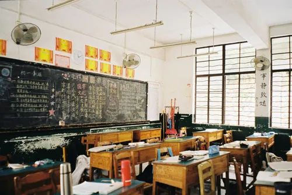

Data tersebar di banyak berkas
Data siswa, guru, dan administrasi masih tersimpan di berkas, buku, dan spreadsheet terpisah. Staf mengulang input yang sama, lalu mencocokkannya manual saat dibutuhkan.

Satu alur untuk data, absensi, dan laporan sekolah
SIMUSA menyatukan data siswa dan guru, absensi, jadwal, dan laporan sekolah. Staf TU tidak perlu membuka beberapa berkas untuk menjawab pertanyaan kepala sekolah atau orang tua.
Yang biasa dicek tiap pagi
Bandingkan kondisi yang sering ditemui di sekolah dengan alur kerja setelah data masuk ke SIMUSA.
Data siswa, guru, dan administrasi masih tersimpan di berkas, buku, dan spreadsheet terpisah. Staf mengulang input yang sama, lalu mencocokkannya manual saat dibutuhkan.
Data siswa, guru, dan administrasi masuk ke satu platform. Perubahan pada satu modul langsung terlihat di modul lain tanpa input ulang.
Absensi dan laporan dikumpulkan dari banyak sumber. Sebelum rapat, staf masih menyalin angka dan mengecek ulang totalsnya.
Absensi, jadwal, dan administrasi berada dalam satu alur. Laporan tersusun dari data yang sudah tercatat, tanpa salin ulang.
Informasi untuk orang tua tersebar di grup chat dan berkas. Riwayatnya tidak jelas, jadi status permintaan sulit ditelusuri.
Notifikasi dan riwayat komunikasi tersimpan di SIMUSA. Staf bisa melihat status tindak lanjut tanpa mencari percakapan lama.
Setiap modul memakai data yang sama, jadi staf tidak perlu mengetik ulang. Rincian alurnya kami tunjukkan saat demo.
Data pendaftaran, profil, dan riwayat kelulusan siswa serta data kepegawaian guru tersimpan di satu tempat. Staf tidak perlu mencocokkan berkas dari beberapa spreadsheet.
Absensi QR atau GPS dicatat saat kegiatan berjalan. Jadwal mengajar mengikuti data guru dan kelas yang sama, dan orang tua mendapat notifikasi saat siswa tidak hadir.
Pembayaran SPP, gaji staf, bukti pembayaran, dan rekap keuangan dikelola dalam satu modul. Bendahara bisa melihat rekap transaksi tanpa mengumpulkan bukti satu per satu.
Laporan kehadiran, prestasi, dan keuangan disusun dari data yang sudah tercatat. Staf memilih periode, lalu mengunduh hasilnya ke PDF atau Excel.
Orang tua mengajukan permohonan dan melihat statusnya lewat portal. Sekolah menyimpan riwayat pesan supaya tindak lanjut tidak bergantung pada percakapan pribadi.
SIMUSA dapat terhubung dengan sistem e-learning atau perpustakaan digital melalui API. Pertukaran data diatur saat implementasi supaya tidak ada input ganda.
Isi menit yang benar-benar dipakai tiap hari. Grafik dan total di bawah dihitung dari angka Anda, bukan dari data acuan kami.
Dua garis memakai skala jam yang sama.
Isi menit per hari dan jumlah staf, lalu tekan hitung untuk melihat grafik.
Jadwalkan meeting gratis dengan tim SIMUSA untuk memahami kebutuhan sekolah Anda.
Lihat simulasi fitting fitur SIMUSA sesuai profil sekolah Anda.
Tim SIMUSA membantu migrasi data dan pelatihan staf. Waktunya disepakati saat konsultasi.
Pendampingan diberikan setelah implementasi dengan jadwal yang disepakati bersama.
Akses dibatasi per peran untuk kepala sekolah, TU, dan operator. Kebutuhan pengamanan data dibahas saat konsultasi.
SIMUSA diakses lewat browser. Kebutuhan perangkat dibahas bersama tim saat demo sesuai kondisi sekolah Anda.
Materi dan jadwal pelatihan disusun berdasarkan peran staf serta kebutuhan sekolah Anda.
Ceritakan kebutuhan sekolah Anda. Kami tunjukkan modul yang relevan saat demo.
Formulir ini belum terhubung ke sistem pengiriman. Klik kirim untuk melihat contoh status konfirmasi.